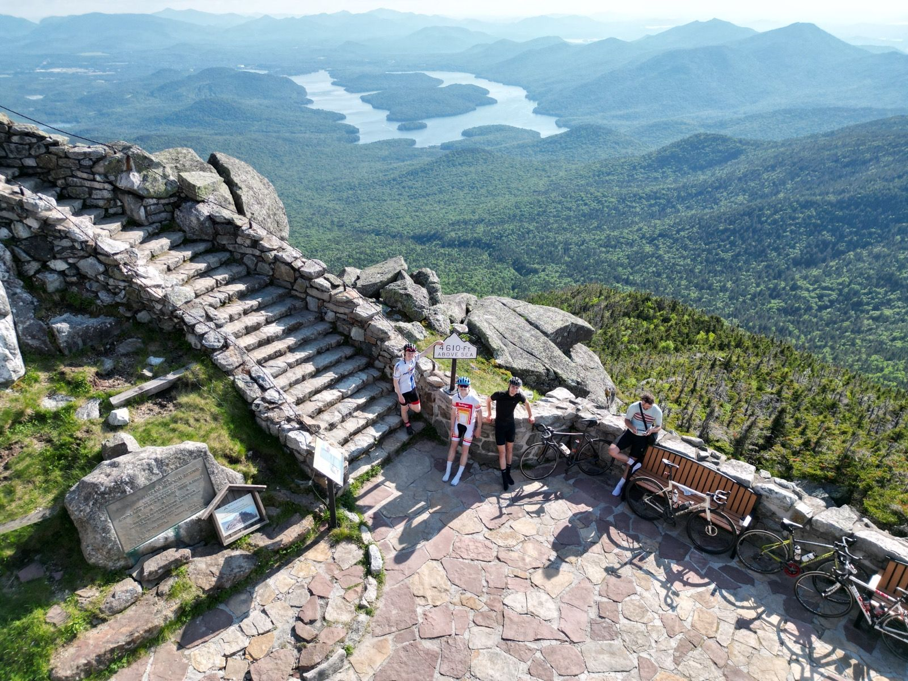
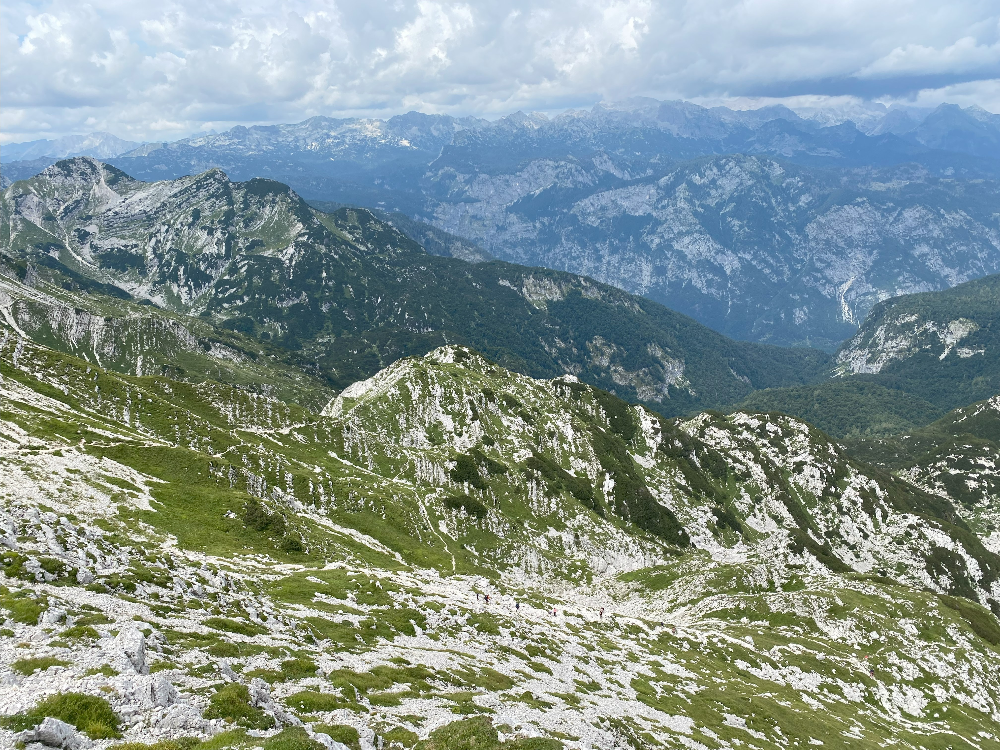
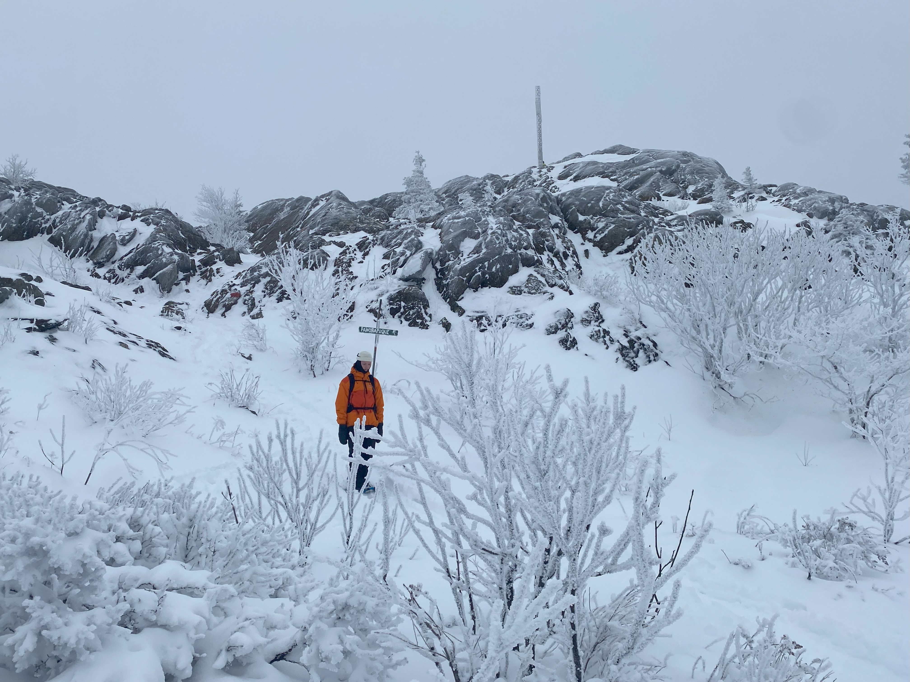
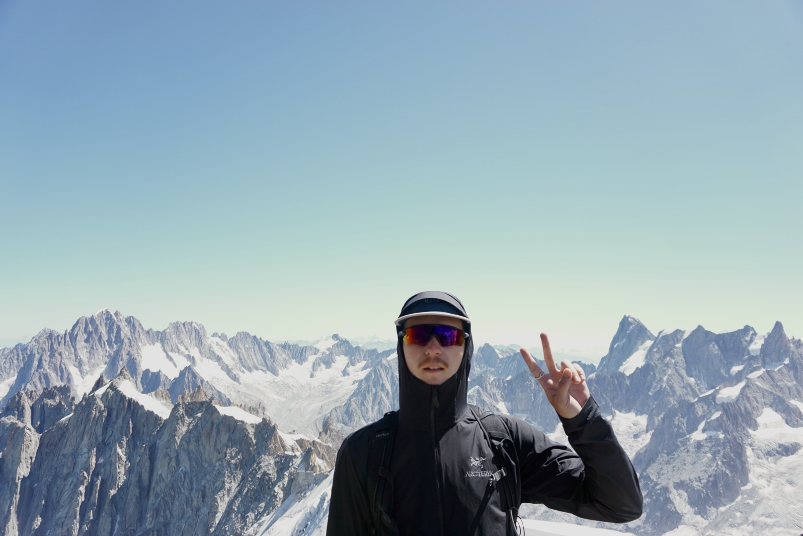
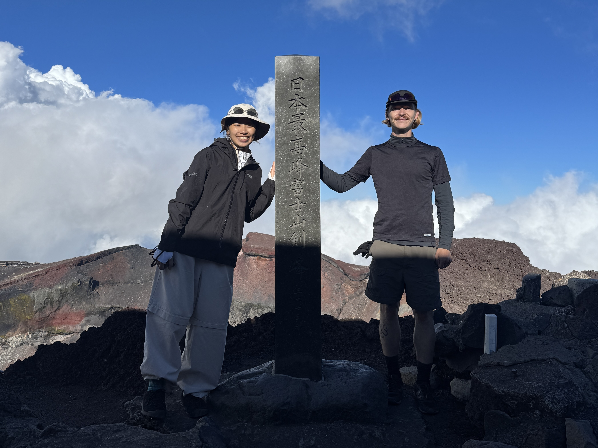
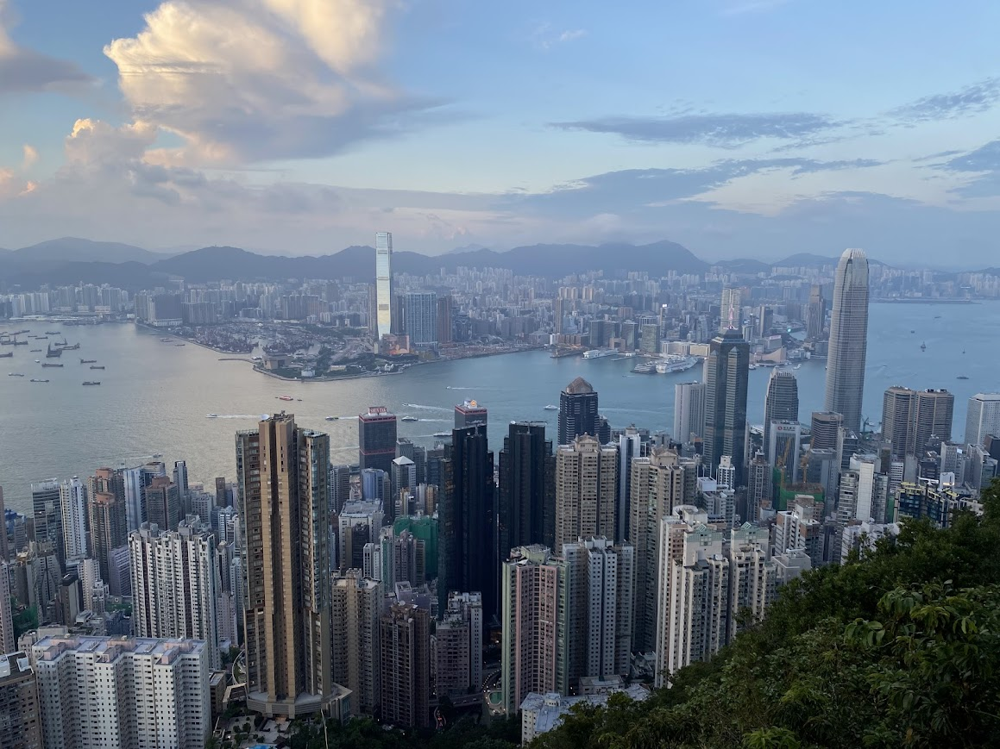

Québec:
Gaspésie:
- Mont Jacques-Cartier- - - - - - - - - - - - - - - - - - - - - - - - - - - - - - - - - - - - - - - - 1270m - 4167'
- Mont Richardson- - - - - - - - - - - - - - - - - - - - - - - - - - - - - - - - - - - - - - - - - - - - 1180m - 3871'
- Mont Vallières-de-Saint-Réal- - - - - - - - - - - - - - - - - - - - - - - - - - - - - - - - - - - -940m - 3084'
- Mont Saint-Alban- - - - - - - - - - - - - - - - - - - - - - - - - - - - - - - - - - - - - - - - - - - - - 364m - 1194'
- Mont Olivine - - - - - - - - - - - - - - - - - - - - - - - - - - - - - - - - - - - - - - - - - - - - - - - - 670m - 2198'
- Mont Ernest-Laforce - - - - - - - - - - - - - - - - - - - - - - - - - - - - - - - - - - - - - - - - - -820m - 2690'
- Mont Orford - - - - - - - - - - - - - - - - - - - - - - - - - - - - - - - - - - - - - - - - - - - - - - - - -853m - 2799'
- Mont Hereford- - - - - - - - - - - - - - - - - - - - - - - - - - - - - - - - - - - - - - - - - - - - - - - 875m - 2870'
- Mont Ham - - - - - - - - - - - - - - - - - - - - - - - - - - - - - - - - - - - - - - - - - - - - - - - - - - 713m - 2339'
- Mont Chauve - - - - - - - - - - - - - - - - - - - - - - - - - - - - - - - - - - - - - - - - - - - - - - - -600m - 1969'
- Mont Pinacle - - - - - - - - - - - - - - - - - - - - - - - - - - - - - - - - - - - - - - - - - - - - - - - - 675m - 2215'
- Mont Saint-Grégoire- - - - - - - - - - - - - - - - - - - - - - - - - - - - - - - - - - - - - - - - - - - -251m - 823'
- Mont-Saint-Bruno - - - - - - - - - - - - - - - - - - - - - - - - - - - - - - - - - - - - - - - - - - - - - -218m - 715'
- Mont Saint-Hilaire - - - - - - - - - - - - - - - - - - - - - - - - - - - - - - - - - - - - - - - - - - - - 413m - 1355'
- Mont Kaaikop - - - - - - - - - - - - - - - - - - - - - - - - - - - - - - - - - - - - - - - - - - - - - - - -838m - 2749'
- Mont Tremblant- - - - - - - - - - - - - - - - - - - - - - - - - - - - - - - - - - - - - - - - - - - - - - 875m - 2871'
- Pic de l'Ours- - - - - - - - - - - - - - - - - - - - - - - - - - - - - - - - - - - - - - - - - - - - - - - - - 740m - 2428'
- Acropole des Draveurs - - - - - - - - - - - - - - - - - - - - - - - - - - - - - - - - - - - - - - - 1048m - 3438'
- Mont du Lac des Cygnes - - - - - - - - - - - - - - - - - - - - - - - - - - - - - - - - - - - - - - 980m - 3215'
- Montagne Blanche - - - - - - - - - - - - - - - - - - - - - - - - - - - - - - - - - - - - - - - - - - - 565m - 1854'
- Cap Trinité- - - - - - - - - - - - - - - - - - - - - - - - - - - - - - - - - - - - - - - - - - - - - - - - - - -411m - 1348'
- Mont-Royal- - - - - - - - - - - - - - - - - - - - - - - - - - - - - - - - - - - - - - - - - - - - - - - - - - - 233m - 764'
- Blue Mountain - - - - - - - - - - - - - - - - - - - - - - - - - - - - - - - - - - - - - - - - - - - - - - - 450m - 1476'
- Tunnel Mountain - - - - - - - - - - - - - - - - - - - - - - - - - - - - - - - - - - - - - - - - - - - - 1692m - 5551'
- Mount Marcy - - - - - - - - - - - - - - - - - - - - - - - - - - - - - - - - - - - - - - - - - - - - - - - 1629m - 5344'
- Whiteface Mountain - - - - - - - - - - - - - - - - - - - - - - - - - - - - - - - - - - - - - - - - - 1483m - 4865'
- Lac blanc- - - - - - - - - - - - - - - - - - - - - - - - - - - - - - - - - - - - - - - - - - - - - - - - - - -2352m - 7717'
- Le massif du Vercors - - - - - - - - - - - - - - - - - - - - - - - - - - - - - - - - - - - - - - - - 2341m - 7680'
- Plan de l'aiguille - - - - - - - - - - - - - - - - - - - - - - - - - - - - - - - - - - - - - - - - - - - - -2300m - 7545'
- Lac du Cos- - - - - - - - - - - - - - - - - - - - - - - - - - - - - - - - - - - - - - - - - - - - - - - - - 2182m - 7159'
- Le Montenvers - - - - - - - - - - - - - - - - - - - - - - - - - - - - - - - - - - - - - - - - - - - - - -1913m - 6276'
- Le mont Veyrier- - - - - - - - - - - - - - - - - - - - - - - - - - - - - - - - - - - - - - - - - - - - - 1291m - 4236'
- La Bastille - - - - - - - - - - - - - - - - - - - - - - - - - - - - - - - - - - - - - - - - - - - - - - - - - - 476m - 1562'
- Le château de Mirabat - - - - - - - - - - - - - - - - - - - - - - - - - - - - - - - - - - - - - - - 1270m - 4167'
- Rysy - - - - - - - - - - - - - - - - - - - - - - - - - - - - - - - - - - - - - - - - - - - - - - - - - - - - - - 2501m - 8205'
- Zelené Pleso- - - - - - - - - - - - - - - - - - - - - - - - - - - - - - - - - - - - - - - - - - - - - - - -1545m - 5069'
- Vogel - - - - - - - - - - - - - - - - - - - - - - - - - - - - - - - - - - - - - - - - - - - - - - - - - - - - -1922m - 6306'
- Las Tres Cruces - - - - - - - - - - - - - - - - - - - - - - - - - - - - - - - - - - - - - - - - - - - - -1890m - 6201'
- Mount Fuji (富士山) - - - - - - - - - - - - - - - - - - - - - - - - - - - - - - - - - - - - - - - - -3776m - 12389'
- Mount Inari- - - - - - - - - - - - - - - - - - - - - - - - - - - - - - - - - - - - - - - - - - - - - - - - - - - 233m - 764'
- Tsing Fai Tong (清快塘) - - - - - - - - - - - - - - - - - - - - - - - - - - - - - - - - - - - - - - - - -233m - 764'
- Abadía de Montserrat - - - - - - - - - - - - - - - - - - - - - - - - - - - - - - - - - - - - - - - - -683m - 2241'
- La Mola- - - - - - - - - - - - - - - - - - - - - - - - - - - - - - - - - - - - - - - - - - - - - - - - - - - -1103m - 3618'
- Puig de les Agulles- - - - - - - - - - - - - - - - - - - - - - - - - - - - - - - - - - - - - - - - - - - -553m - 1814'
- Turó de l'Home- - - - - - - - - - - - - - - - - - - - - - - - - - - - - - - - - - - - - - - - - - - - - -1708m - 5603'
- Puigsagordi (Via ferrata) - - - - - - - - - - - - - - - - - - - - - - - - - - - - - - - - - - - - - - -987m - 3225'
Estrie:
Montérégie:
Laurentides:
Charlevoix:
Saguenay-Lac-Saint-Jean:
Montréal:
Canada:
Ontario:
Alberta:
USA:
France:
Auvergne-Rhône-Alpes:
Occitanie:
Slovakia:
Slovenia:
Colombia:
Japan:
Yamanashi:
Kyoto:
Hong Kong:
Spain:






